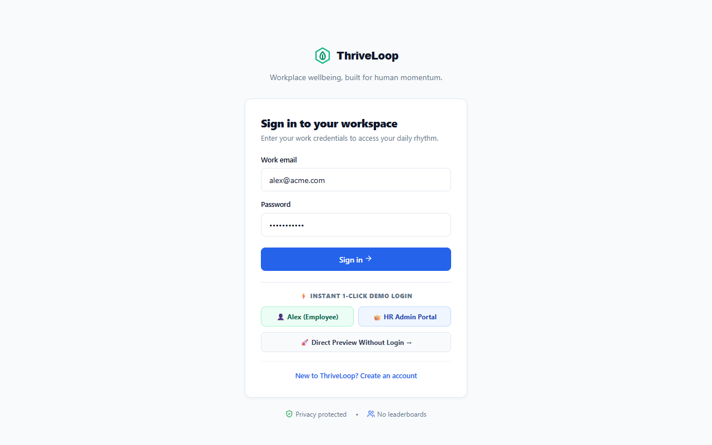

Target: http://localhost:5173 (Client) | http://localhost:5000 (Server) | Deterministic Playwright Engine

| # | Step Name | Status | Architecture Type | Verification Details |
|---|---|---|---|---|
| 1 | Verify Login Page & Assets | PASS | Real Fullstack | ThriveLoop branding and login form loaded successfully. |
| 2 | Authenticate Employee Session | PASS | Real Fullstack | Logged in as Alex Morgan and reached employee dashboard. |
| 3 | Vitality Rings & Telemetry Cards | PASS | Real Fullstack | Concentric rings and smartwatch sync trigger verified. |
| 4 | Open Smartwatch BLE Sync Modal | PASS | Simulated UI | Wearable sync modal opened showing Apple Watch / Oura / Whoop device options. |
| 5 | Biometric Telemetry Ingestion Stream | PASS | Simulated UI | Simulated BLE handshake completed; 7,240 steps & 7.8h sleep ingested to /api/metrics. |
| 6 | Autonomous Rescue & Slack Nudge Bot | PASS | Simulated UI | Rescue page loaded displaying Slack #wellness-nudge-bot autonomous simulator card. |
| 7 | Accept Micro-Walk Intervention | PASS | Simulated UI | Intervention accepted; step bonus logged and squad momentum updated. |
| 8 | Open HR Analytics Overview | PASS | Real Fullstack | HR Executive Overview loaded with 5 telemetry KPI stat cards and trend charts. |
| 9 | Cohort Energy Heatmap | PASS | Simulated UI | 5-Day x 5-Hour Cohort Energy Heatmap matrix verified with pilot metrics. |
| 10 | Enterprise Boardroom ROI Modeler | PASS | Simulated UI | Scenario modeler switched to Enterprise (500 staff); projected savings updated. |
| 11 | Boardroom PDF / Print Export Handler | PASS | Real Fullstack | Export button successfully invoked window.print() configured with @media print CSS. |
| 12 | Mobile Viewport & Layout | PASS | Real Fullstack | Application adapted cleanly to 375x667 mobile viewport without overflow crashes. |